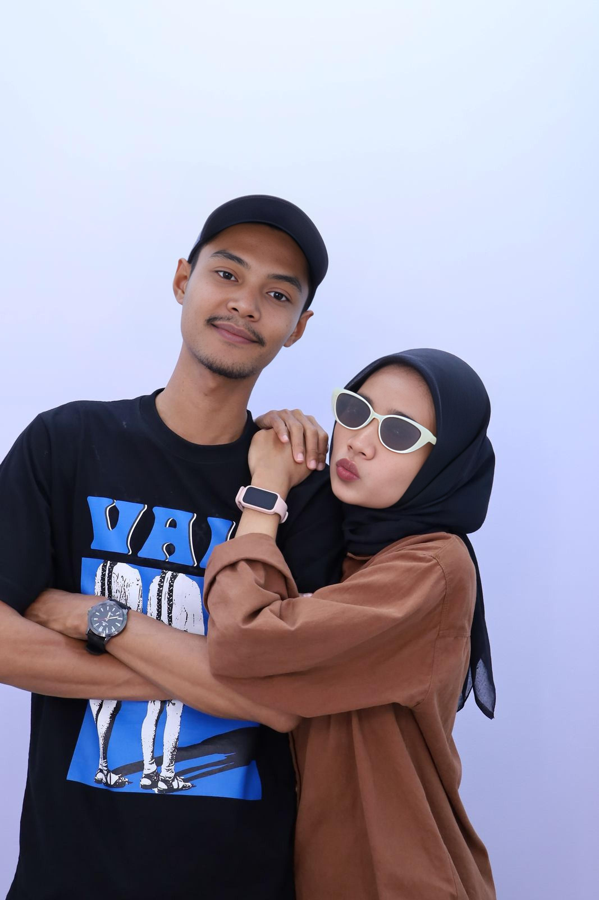
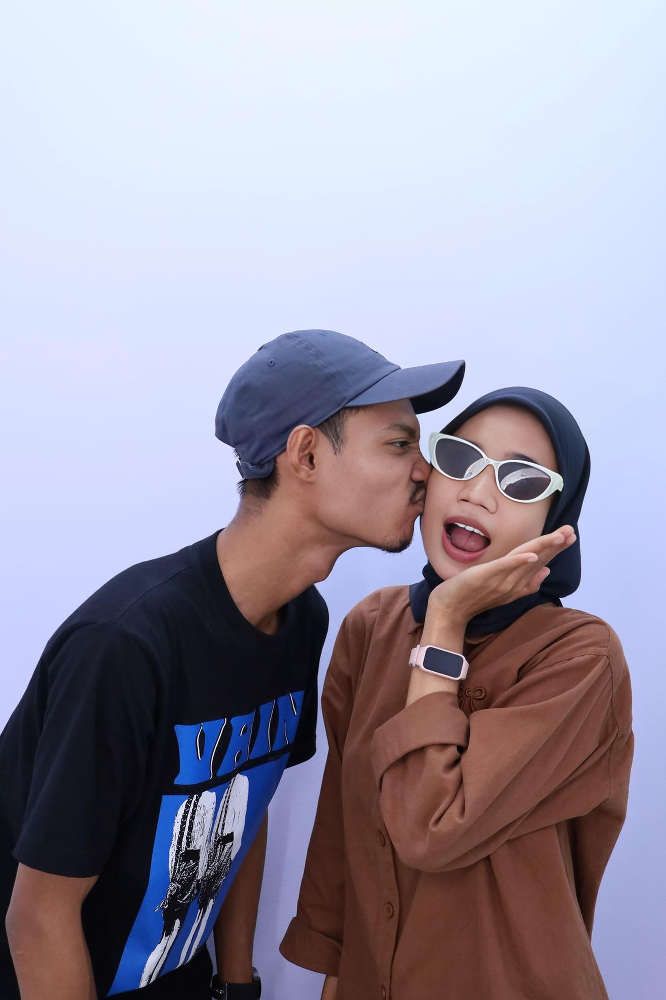
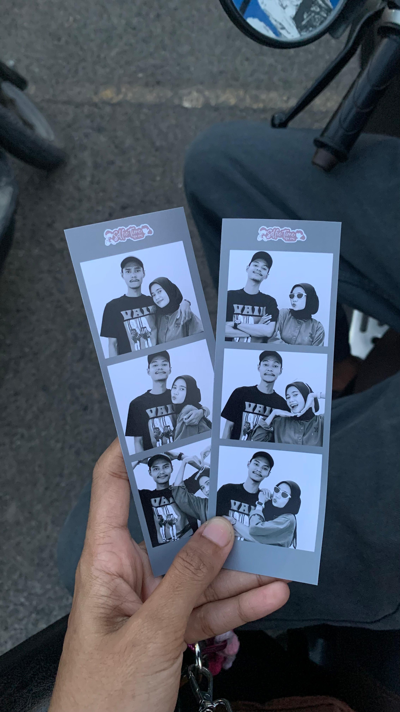
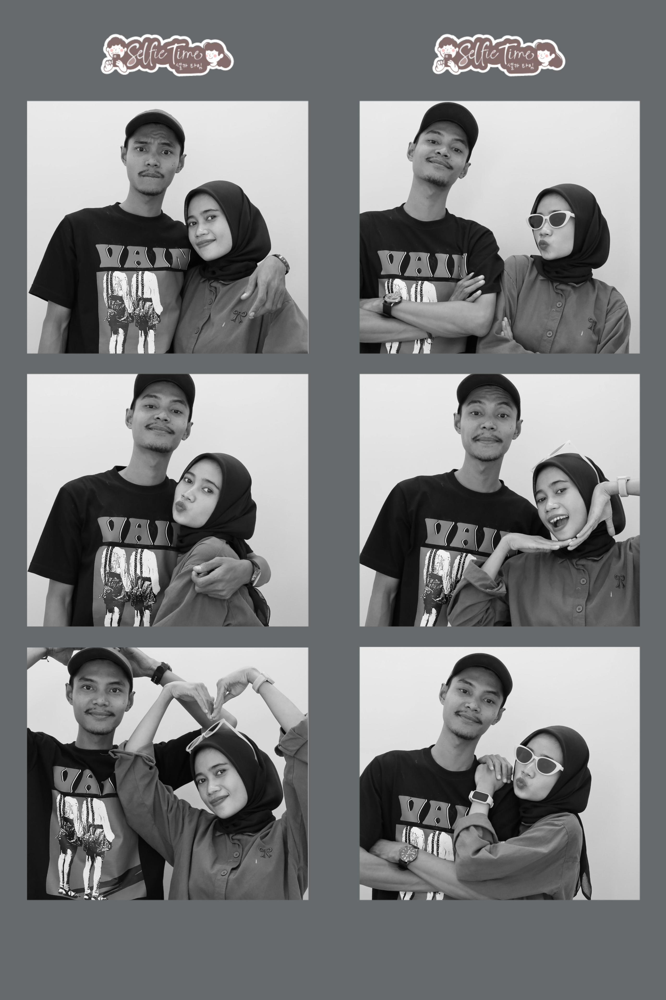
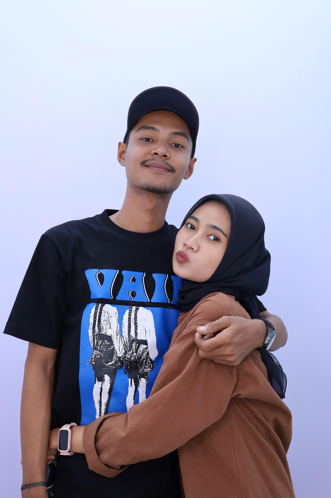
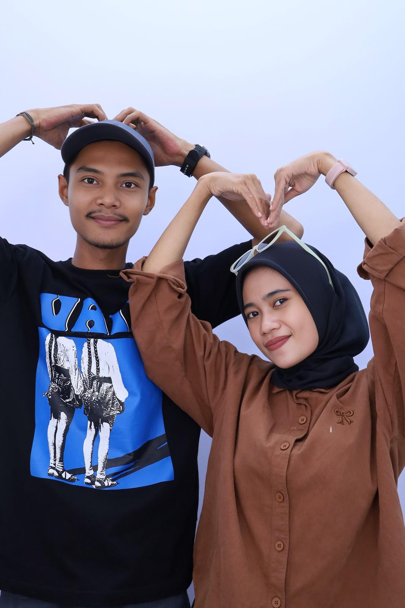

6 Tahun Kita, Intan. Aku Minta Maaf. 🙏
Ini adalah rangkuman dari dunia yang aku hancurkan, dan aku ingin memperbaikinya.
Mengenai Kita, dan Kesalahanku
Enam tahun bersamamu adalah anugerah. Semua tawa, tangis, dan pertengkaran kecil itu membentukku. Meskipun kita berpisah, tidak ada satu hari pun aku tidak menyesali bagaimana semua ini berakhir. Kamu bukan hanya 'kebo lucu', kamu adalah jiwaku.
"Cinta sejati tidak berakhir, hanya terhenti sejenak karena kesalahan. Dan penyesalan adalah bukti bahwa cinta itu masih ada."
Galeri Kenangan Indah Kita 📸❤️
Aku harap, saat melihat semua ini, kamu ingat mengapa kita bertahan selama 6 tahun. Aku mencintaimu.





